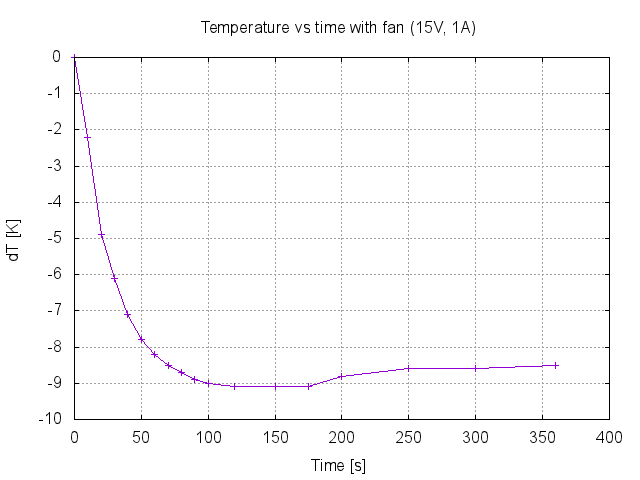
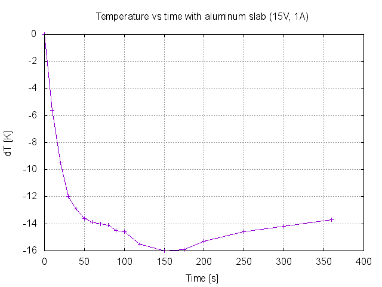
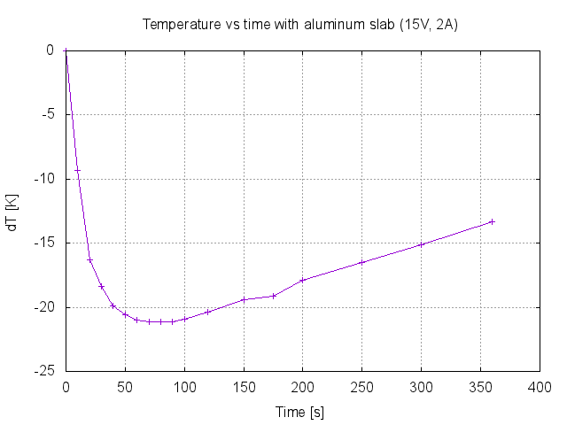
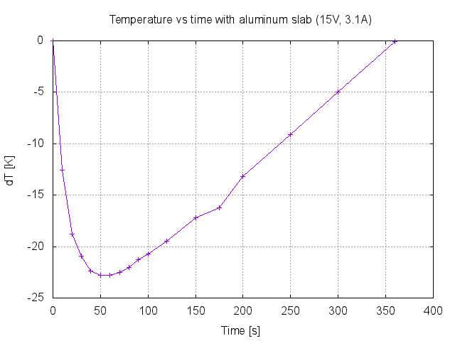

Measurement: Peltier cooler temperature vs time vs current, updated Date: 2016-06-08 Equipment: - Fluke 179 multimeter - K-type thermocouple - Tenma DC power supply - 35W peltier element (TEC1-12706) - Fan - Aluminum slab Environment: - Temperature 25.5C Setup: - Peltier element attached to an aluminum case (~150mm x 100mm x 70mm) - Thermocouple wire taped to the middle middle of peltier element - Fan is mounted inside the case in order to provide air flow for cooling - Second measurement is done without fan and the aluminum case is changed to a 100mm x 50mm x 20mm slab of solid aluminum Results: Input parameters: 15V, 1A, with fan  Input parameters: 15V, 1A, with aluminum slab  Input parameters: 15V, 2A, with aluminum slab  Input parameters: 15V, 3.1A, with aluminum slab  Conclusions: - Needs more heat sinking to get better performance